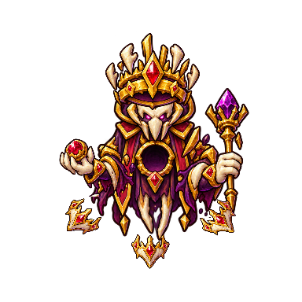
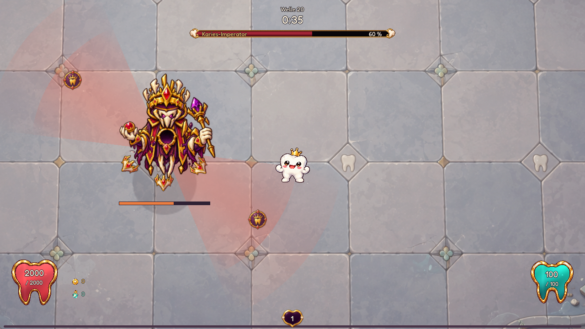
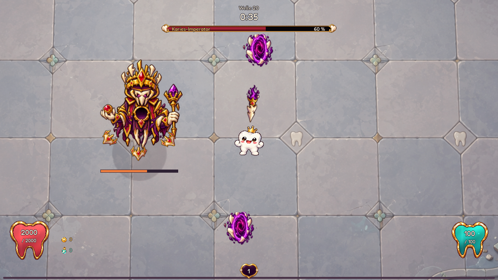
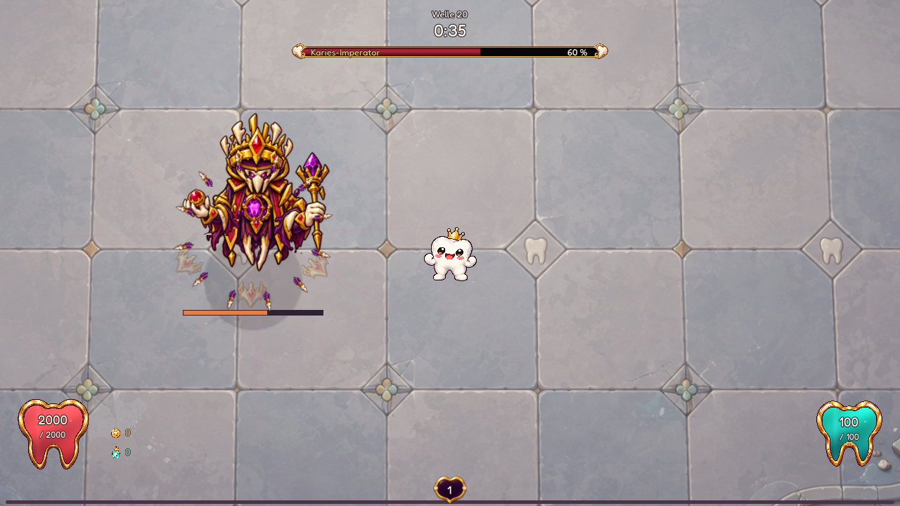
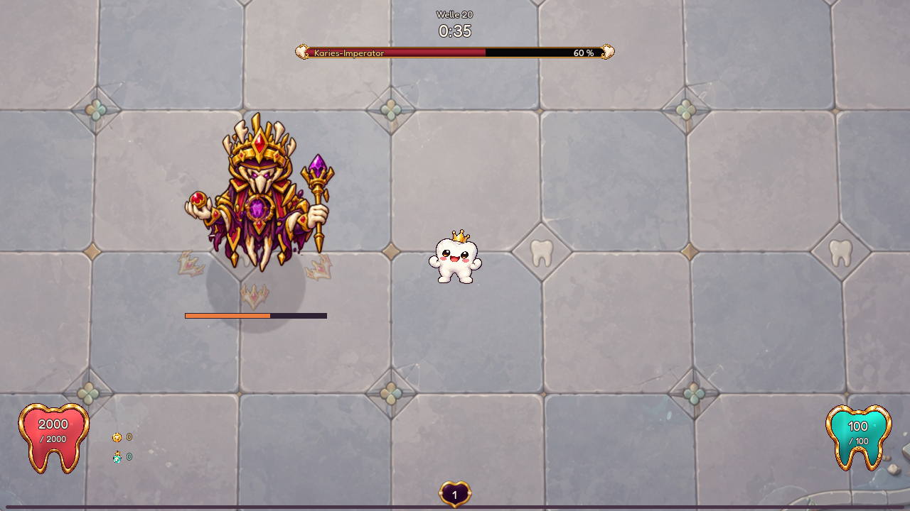
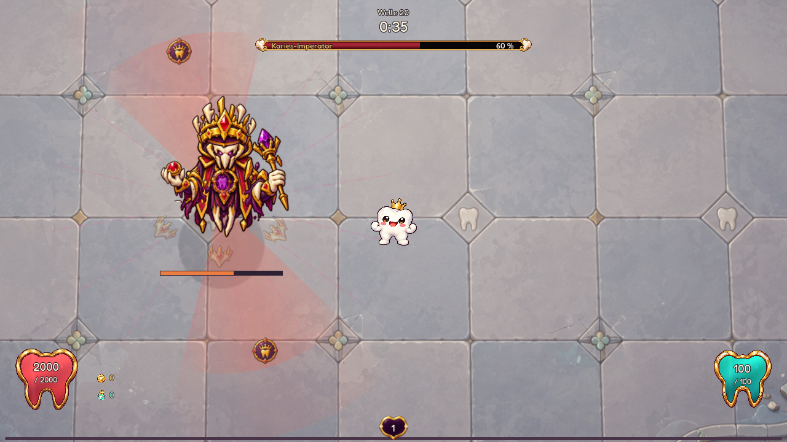

DENTI · FINALER BOSS · IM SPIEL ANGESCHLOSSEN

Das Kronengericht.
Ein Herrscher über Richtung und Rhythmus. Seine Kronenwache dreht sich, Hofurteile wechseln den gefährlichen Boden, Portale schicken Wurzellanzen. Beim Nerventakt öffnet er die Brust und feuert vollständige, versetzte Salven.
Normal · zweite Gesundheitsphase · zwei Urteile, zwei Portalstiche, drei Nervensalven mit je zwölf Geschossen.
Kronenwache · die Richtung zähltDrei Platten schützen den sichtbaren Vorderwinkel. Seitlich und von hinten trifft man stärker. Die Wache kündigt ihre nächste Richtung an und dreht sich über 0,7 Sekunden. Schutz reduziert Schaden; er macht den Imperator nicht unverwundbar.
Hofurteil · wechselnder BodenZwei gegenüberliegende Flächen füllen sich, dann folgt das Urteil. Jeder weitere Schritt hat eine eigene Warnung und einen anderen Winkel. Die freien Flächen richten sich nach dem Ablauf der Arena, nicht nach Dentis Standort.
Portalstich · eine feste BahnEin Portal öffnet sich an jedem Ende. Die Lichtbahn zeigt den kommenden Wurzelstich. Nach einer Sekunde fliegt die Lanze durch die fest markierte Strecke; weitere Stiche werden neu angekündigt. Die Portale bleiben im sichtbaren Arenabereich.
Blanker Nerv · Takt lesenDie Brust öffnet sich. Vollständige Salven mit gleichmäßigen Geschossabständen folgen in festem Takt und versetzter Orientierung. Einzelne Waffentreffer erzeugen keine zusätzlichen Wellen. Anschließend bleibt Zeit für einen Gegenangriff.

Hofurteil · fest angekündigte Winkel
Portalstich · echte fliegende Lanze
Nerventakt · keine ausgesparte Sicherheitsgasse
Offener Kern · stärkerer eigener SchadenLetzte Phase: Nervensalve und Hofurteil gemeinsam

Hochkant und Querformat
Je 36 Sekunden native Aufnahme auf Easy, Normal, Hard und Hell. Drei Studien von je zwölf Sekunden werden mit einem frischen Angriff gestartet; innerhalb der Studien läuft die echte Zustandsmaschine weiter. Zweite Gesundheitsphase, skriptgesteuerter Denti mit 2.000 HP, ohne Waffen und normale Gegner. Die Einzelbilder zeigen zusätzliche Momente. Die letzte Phase kombiniert höchstens zwei Hauptmechaniken.
Im regulären Welle-20-Profil, Story und Endlos angeschlossen. Gemalte generierte Einzelteile, acht Gelenke, proportional skalierte Bilder, wiederverwendete Warntexturen und begrenzte Geschossbatches. Alle vier Stufen skalieren Bewegung, Aktionsmenge und Geschosse; Warnzeiten bleiben erhalten. Tests prüfen auch langsame erste Ausweichwege aus allen vier Ecken. Menschliche Tests voller Builds und mobile Web-Performance sind noch offen.
Säurekönig · Karamellprinz · Umhang-Graf